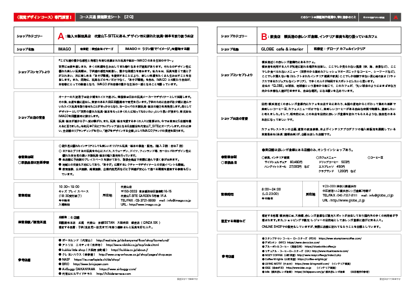

Sato Kanamu
Portfolio
上記のロゴは「最終的にはこのカフェが自由の場所であるように」というグローブの願いから世界中から多種多様な人々が各地から集まってきている軌跡を視覚化し、その形が「自由」の象徴である「翼」を象らせています。
グローブは各地から人々が集まることによって自由に羽ばたいていく。自由な場所になっていくという願いを象徴したものです。
線が5本である理由は世界中から集まってきていることから5大陸を示している
色彩設定については店内から見える横浜港の爽やかな景色、知性的でビジネスでも通用するような青を選択。
実際の課題要項▼
その他様々なコミュニケーションツール▼
実際に印刷した際の質感の高さに驚かされる▼